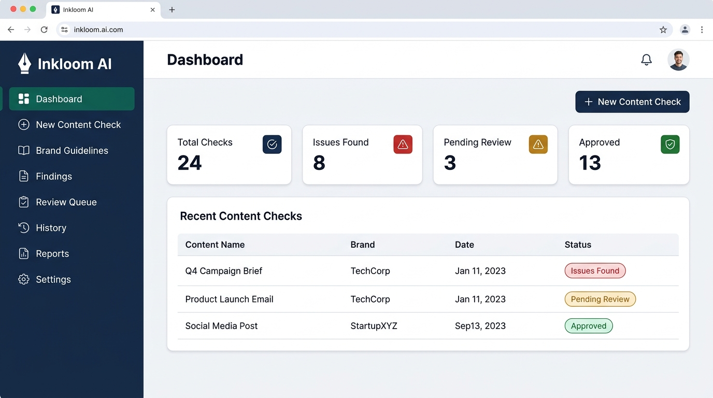
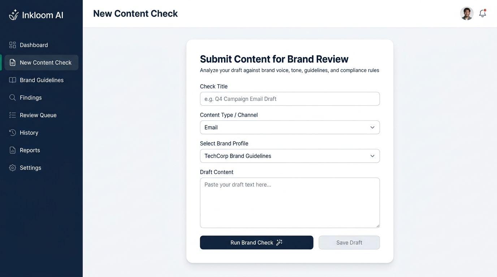
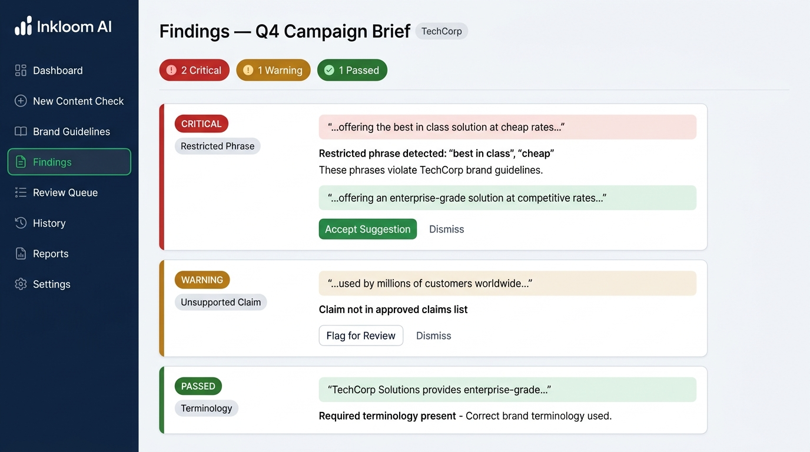
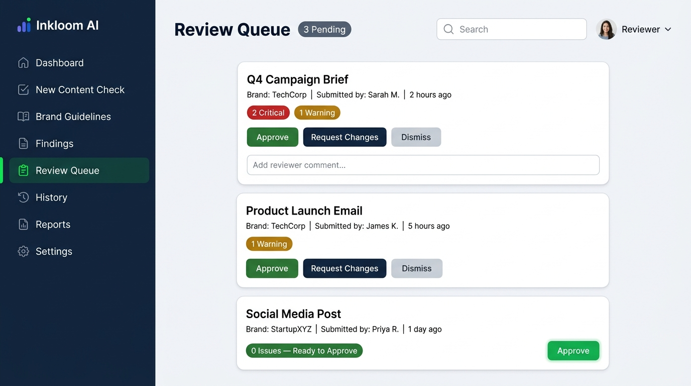

Inkloom AI — Intelligent Brand Governance Platform
Enterprise-grade brand compliance, deterministic copy auditing, and human-in-the-loop review queue.
1. Executive Summary & Problem Solved
Marketing teams, content agencies, and generative AI tools create hundreds of outbound communication assets daily. Without continuous automated brand oversight, unverified superlative claims (e.g. "100% foolproof", "cheapest in market"), off-brand tone, and missing mandatory legal disclaimers slip into published collateral.
Inkloom AI introduces an automated brand governance gatekeeper. Rather than taking control away from marketers with autonomous rewriting, Inkloom highlights exact non-compliant excerpts, matches them against organization brand guidelines, suggests professional drop-in replacements, and routes content to a Human Review Gate before publication.
2. Working Features Delivered in Round 2
- Deterministic Brand Audit Engine: Sub-second pattern matching that flags restricted phrases, unverified guarantees, and missing mandatory corporate terminology.
- Contextual Findings Screen: Isolates exact offending text excerpts with surrounding copy context, visual severity tags (Critical, Warning, Passed), rule explanations, and confidence ratings.
- Non-Destructive In-Place Editor: Allows users to review, accept, or reject suggested replacements with instantaneous draft preview without modifying or destroying the original author's copy.
- Brand Guidelines Management: Full interface to configure target tones, restricted buzzwords, mandatory brand terminology, and approved legal statements per company profile.
- Human Review Queue: Collaborative approval workspace where authorized reviewers can Approve, Request Changes, or Dismiss drafts, recording reviewer identity and decision timestamps.
- Real-Time Analytics Dashboard: Live counters for Total Audits, Critical Violations, Awaiting Human Review, and Clean Approvals.
- One-Click Structured Audit Export: Generates and downloads comprehensive compliance audit reports in structured JSON for enterprise auditing trails.
- Resilient Offline-Capable Architecture: Single-page application that operates seamlessly against live cloud MongoDB Atlas backends while maintaining zero-friction offline caching if backend services are unreachable.
3. Product Visual Walkthrough
Live Governance Dashboard

Audit metrics, activity history, and one-click quick audit launcher.
Content Check & Audit Engine

Channel selection, brand profile matching, and draft analysis.
Contextual Findings & Live Preview

Exact excerpt highlighting, rule citations, and non-destructive replacement.
Human Sign-Off Review Queue

Human gatekeeper workflow with approve, reject, and revision notes.
4. Technology Stack & Implementation Details
| Layer |
Technology |
Role in System |
| Frontend |
React 19 + Vite 8 + Tailwind CSS v4 |
Single-page interactive dashboard, non-destructive editor, and Review Queue. |
| Backend API |
Node.js + Express.js REST API |
Deterministic rule engine, profile management, and review decision logging. |
| Database |
MongoDB Atlas + Mongoose ODM |
Cloud storage for BrandProfiles, ContentChecks, Findings, and ReviewDecisions. |
| AI / NLP Service |
Python 3.12 Microservice (FastAPI/HTTP) |
Flesch Reading Ease readability scoring, syllable tokenization, and hype detection. |
| Deployment |
Vercel (Frontend) + Git Version Control |
High-availability public web deployment and open-source public repository. |
Engineering Highlight: Zero-downtime client-server synchronization. The React client communicates with the Express/MongoDB Atlas backend via Axios, but features graceful deterministic client-side evaluation if remote microservices experience network latency.
5. Evolution: What Changed Since Round 1
- Shifted from Autonomous AI to Human-in-the-Loop Governance: In our initial proposal, we explored fully automated AI text re-writing. Testing revealed that autonomous re-writing introduces subtle hallucinations and risks stripping intended brand nuance. We restructured Inkloom into a decision-support platform with a mandatory Human Review Queue.
- Added Multi-Tier Deterministic + Statistical Safeguards: Rather than relying solely on black-box LLM prompts that can be inconsistent, we built a deterministic rule engine backed by MongoDB Atlas and a dedicated Python NLP microservice for readability and hype scoring.
- Added One-Click Audit Report Export: Created downloadable JSON audit trail reports so corporate compliance teams can store immutable records of every review decision.
6. Known Current Limitations ("What Does NOT Work Yet")
- Direct CMS / Social Webhook Publishing: The system currently outputs approved copy and JSON audit records; direct one-click pushing into live WordPress, HubSpot, or Buffer instances is planned for Round 3.
- Multi-Tenant Authentication Walls (RBAC): Full login/JWT authentication is intentionally relaxed in this demo build so judges can test all views instantly without creating credentials.
- Microservice Cloud Cold-Starts: If the secondary Python NLP microservice takes time to initialize on free-tier hosting, the platform transparently uses the deterministic engine to ensure zero judge disruption.
7. Three Major Improvements for Round 3
1. Multi-Modal Asset & Visual Brand Governance
Expand checks from pure copy to visual marketing assets. Users can upload banner graphics and slide decks; the engine will extract hex color palettes, test WCAG accessibility contrast ratios, and verify logo clear-space rules.
2. Direct Headless CMS & Marketing Webhook Connectors
Integrate bidirectional webhooks for HubSpot, WordPress, and Slack. Approved drafts in the Human Review Queue will automatically update draft status in the connected CMS and alert the campaign team in Slack.
3. Domain-Specific RAG Tone Re-writer
Implement Retrieval-Augmented Generation (RAG) over an enterprise's repository of previously approved copy. Rather than single-word substitutions, the system will offer full contextual alternative paragraphs calibrated to the organization's unique voice.
8. Team & Submission Verification
Project Name: Inkloom AI
Repository: https://github.com/Abhimancoder/inkloom-ai (Public)
Live Product: https://inkloom-ai-snowy.vercel.app/
Team Members: Abhiman (Lead / Product & UX), Pranav Sharma (Backend & AI), Team Frontend Developer.